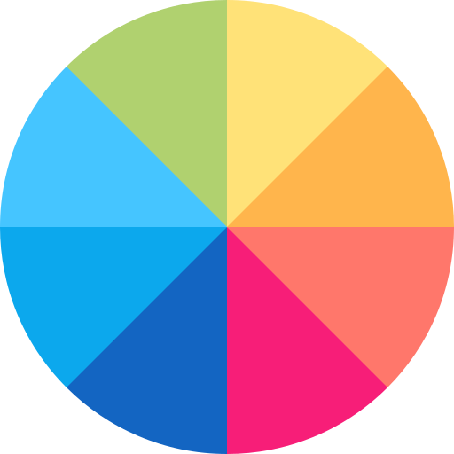

<link rel="import" href="../../bower_components/polymer/polymer.html"/>

<dom-module id="trend-tag">
  <template>
    <style>
      .trend-tag-wrapper {
        background-color: #fff;
        border: 1px solid rgba(0,0,0,.125);
        border-radius: .25rem;
        margin-bottom: 4px;
        font-size: 14px;
        color: rgba(0,0,0,.5);
        padding: 4px 8px;
        position: relative;
      }

      .trend-tag-wrapper.is-empty:hover .trend-tag-tip{
        display: flex;
      }

      .trend-tag-tip {
        background: #fff;
        position: absolute;
        top: -88px;
        width: 200px;
        height: 80px;
        border-radius: 5px;
        border: 1px solid #eee;
        display: none;
        flex-direction: column;
        padding: 8px;
        left: 50%;
        margin-left: -100px;
        box-shadow: 0 2px 4px 0 rgba(0,0,0, .05);
      }

      .trend-tag-tip span:first-child {
        font-weight: 700;
      }

      .trend-tag-wrapper.is-empty > *:not(.trend-tag-tip) {
        opacity: 0.5;
      }

      .trend-tag-title-buttons > div {
        color: #000;
        margin-left: 4px;
      }

      .tag-color-picker-container-header {
        font-size: 12px;
        font-weight: 400;
        margin-bottom: 8px;
      }

      .tag-color-picker-container-body {
        padding-right: 8px;
      }

      .tag-color-picker-container {
        width: 210px;
        /*height: 180px;*/
        border: 1px solid #0055cc;
        padding: 4px 8px;
      }

      .tag-color-picker-container-subheader {
        margin-bottom: 8px;
      }

      .tag-color-picker-container-subheader > span {
        font-size: 10px;
      }

      .tag-color-picker-container-subheader img {
        width: 14px;
      }

      .color-palette-img-wrapper {
        width: 20px;
        height: 20px;
        display: flex;
        justify-content: center;
        align-items: center;
        cursor: pointer;
      }

      .color-palette-img-wrapper.active {
        background: #dee2e6;
      }

      .tag-color-picker-container-footer .color-container {
        width: 16px;
        height: 16px;
        margin: 3px;
        border: none;
        border-radius: 3px;
        cursor: pointer;
      }

      .tag-color-picker-container {
        display: none;
        position: absolute;
        top: 100%;
        left: 0;
        background: #fff;
        z-index: 99999;
      }

      .tag-color-picker-container.active {
        display: block;
      }

      .tag-color-picker-icon {
        cursor: pointer;
        /*width: 20px;*/
        color: #565656;
      }

      .tag-color-picker-icon i {
        font-size: 20px;
      }

      .color-icon-indicator {
        width: 22px;
        height: 6px;
      }

      .tag-color-picker-icon .fa-sort-down {
        font-size: 14px;
      }

      .tag-color-picker-wrap {
        position: relative;
      }

      .decimal-edit-container {
        cursor: pointer;
        border: 1px solid rgba(0,0,0,.125);
        padding: 4px 8px;
        width: 48px;
        box-sizing: border-box;
        user-select:none;
        -moz-user-select: none;
        -webkit-user-select: none;
        -ms-user-select: none;
      }

      .decimal-edit-container i {
        color: #0055cc;
      }

      .pane-editor {
        color: #000;
        padding: 2px;
      }

      .pane-editor.disabled {
        cursor: not-allowed;
        background: #eee;
        opacity: .5;
      }

      .pane-editor .pane-value {
        width: 32px;
        text-align: center;
      }


      .change-pane-index-button {
        cursor: pointer;
      }

      .change-pane-index-button.disabled {
        cursor: not-allowed;
        opacity: .5;
      }


      .plot-input {
        width: 100%;
        margin: 3.95px 0;
        background-color: transparent;
        -webkit-appearance: none;
      }
      .plot-input:focus {
        outline: none;
      }
      .plot-input::-webkit-slider-runnable-track {
        background: #9c9a9d;
        border: 0.2px solid rgba(0, 0, 0, 0);
        border-radius: 1.3px;
        width: 100%;
        height: 5.1px;
        cursor: pointer;
      }
      .plot-input::-webkit-slider-thumb {
        margin-top: -4.15px;
        width: 14px;
        height: 13px;
        background: #ffffff;
        border: 1px solid #000000;
        cursor: pointer;
        -webkit-appearance: none;
      }
      .plot-input:focus::-webkit-slider-runnable-track {
        background: #a9a7aa;
      }
      .plot-input::-moz-range-track {
        background: #9c9a9d;
        border: 0.2px solid rgba(0, 0, 0, 0);
        border-radius: 1.3px;
        width: 100%;
        height: 5.1px;
        cursor: pointer;
      }
      .plot-input::-moz-range-thumb {
        width: 14px;
        height: 13px;
        background: #ffffff;
        border: 1px solid #000000;
        cursor: pointer;
      }
      .plot-input::-ms-track {
        background: transparent;
        border-color: transparent;
        border-width: 4.95px 0;
        color: transparent;
        width: 100%;
        height: 5.1px;
        cursor: pointer;
      }
      .plot-input::-ms-fill-lower {
        background: #8f8d90;
        border: 0.2px solid rgba(0, 0, 0, 0);
        border-radius: 2.6px;
      }
      .plot-input::-ms-fill-upper {
        background: #9c9a9d;
        border: 0.2px solid rgba(0, 0, 0, 0);
        border-radius: 2.6px;
      }
      .plot-input::-ms-thumb {
        width: 14px;
        height: 13px;
        background: #ffffff;
        border: 1px solid #000000;
        cursor: pointer;
        margin-top: 0px;
      }
      .plot-input:focus::-ms-fill-lower {
        background: #9c9a9d;
      }
      .plot-input:focus::-ms-fill-upper {
        background: #a9a7aa;
      }

      @supports (-ms-ime-align:auto) {
        .plot-input {
          margin: 0;
        }
      }

      .plot-editor {
        min-width: 100px;
        padding: 2px 4px;
        height: 46px;
        display: flex;
        flex-direction: column;
        justify-content: space-between;
        align-items: stretch;

      }

      .plot-editor.disabled {
        cursor: not-allowed;
        background: #eee;
        opacity: .5;
      }

      .plot-editor.disabled .plot-input::-webkit-slider-runnable-track {
        cursor: not-allowed;
      }

      .plot-editor.disabled .plot-input::-webkit-slider-thumb {
        cursor: not-allowed;
      }

      .plot-editor span {
        color: #000;
        font-size: 8px;
      }

      .trend-tag-body  {
        display: none;
      }

      .trend-tag-body.expand {
        display: flex;
      }

    </style>
    <div class$="{{_getRootClassName(isEmpty)}}">
      <div class="trend-tag-tip">
        <span>NO DATA</span>
        <span>There is no data for selected period</span>
      </div>
      <div class="trend-tag-header">
        <div class="trend-tag-title d-flex justify-content-between">
          <span>{{data.tag_name}}</span>
          <div class="trend-tag-title-buttons d-flex">
            <div class="cursor-pointer" on-click="_toggleExpand"><i class="fas fa-cog"></i></div>
            <div class="cursor-pointer" data-index$="hello" on-click="_onRemoveClick"><i class="fas fa-times-circle"></i></div>
          </div>
        </div>
        <div class="trend-tag-description">{{data.description}}</div>
      </div>
      <div class$="{{_getTagBodyClass(expand, isEmpty)}}">
        <div class="tag-color-picker-wrap mr-2">
          <div class="tag-color-picker-icon d-flex justify-content-center align-items-center" on-click="_toggleColorPicker">
            <div>
              <i class="fas fa-fill-drip"></i>
              <div class="color-icon-indicator" style$={{getRecentColorStyle(data.color)}}></div>
            </div>
            <i class="fas fa-sort-down ml-1"></i>
          </div>
          <div class$="{{getColorPickerContainerClass(colorPickerShown)}}">
            <div class="tag-color-picker-container-header d-flex justify-content-between">
              <span>Color</span>
              <div on-click="_closeColorPicker"><i class="fas fa-times"></i></div>
            </div>
            <div class="tag-color-picker-container-subheader d-flex justify-content-between">
              <span>{{_getColorPickerTitle(paletteView)}}</span>
              <div class="d-flex align-items-center">
                <div class$="{{getPaletteButtonClass(paletteView)}}" on-click="_enablePalette"></div>
                <div class$="{{getGradientButtonClass(paletteView)}}" on-click="_enableGradient"></div>
              </div>
            </div>
            <div class="tag-color-picker-container-body">
              <input class="color-picker" value={{data.color}} />
            </div>
            <div class="tag-color-picker-container-footer mt-2">
              <span>Recent Colors</span>
              <div class="d-flex">
                <template
                    is="dom-repeat"
                    items="{{recentColors}}"
                    as="color">
                  <div class="color-container" data-color$={{color}} style$="{{getRecentColorStyle(color)}}" on-click="_setRecentColor"></div>
                </template>
              </div>

            </div>
          </div>
        </div>
        <div class="decimal-edit-wrapper d-flex mr-2">
          <div class="decimal-edit-container" on-click="_decrFloor">
            <div>
              <span>.0</span>
              <i class="fas fa-arrow-left"></i>
            </div>
            <div><span>.00</span></div>
          </div>
          <div class="decimal-edit-container ml-1" on-click="_incrFloor">
            <div><span>.00</span></div>
            <div>
              <span>.0</span>
              <i class="fas fa-arrow-right"></i>
            </div>
          </div>
        </div>
        <div class$="{{_getPaneEditorClass(paneDisabled)}}">
          <div class="width-100 text-center">Pane</div>
          <div class="d-flex">
            <div class$="{{_getDecrPaneIndexButtonClass(paneIndex, paneDisabled)}}" on-click="_decrPaneIndex"><i class="fas fa-minus-circle"></i></div>
            <div class="pane-value">{{_getPaneIndex(paneIndex, paneDisabled)}}</div>
            <div class$="{{_getIncrPaneIndexButtonClass(paneIndex, maxPanes, paneDisabled)}}" on-click="_incrPaneIndex"><i class="fas fa-plus-circle"></i></div>
          </div>
        </div>
        <div class$="{{_getPlotEditorClass(plotDisabled)}}">
          <div class="d-flex justify-content-between align-items-center">
            <span>Line</span>
            <span>Line & Dots</span>
            <span>Dots</span>
          </div>
          <input type="range" class="plot-input" min="0" max="2" value={{_renderPlotType(data.plotType)}} disabled="{{plotDisabled}}" on-input="_onPlotTypeInput" />
        </div>
      </div>
    </div>

  </template>

  <script>
    Polymer({
      is: 'trend-tag',
      properties: {
        data: {
          type: Object,
          value: {},
          notify: true
        },
        paletteView: {
          type: Boolean,
          value: true,
          observer: '_onPaletteViewChange'
        },
        recentColors: {
          type: Array,
          notify: true,
          value: []
        },
        colorPickerShown: {
          type: Boolean,
          value: false
        },
        plotType: {
          type: Number,
          value: 0
        },
        expand: {
          type: Boolean,
          value: false
        },
        index: {
          type: Number,
          value: 0
        },
        paneIndex: {
          type: Number,
          value: 0
        },
        paneDisabled: {
          type: Boolean,
          value: false
        },
        plotDisabled: {
          type: Boolean,
          value: false
        },
        maxPanes: {
          type: Number,
          value: 0
        },
        floorData: {
          type: Number,
          value: 2
        },
        isEmpty: {
          type: Boolean,
          value: false
        }
      },
      attached () {
        document.addEventListener('click', this._bodyClick.bind(this))
        this.spectrum = $(Polymer.dom(this).node.querySelector('.color-picker')).spectrum({
          type: "flat",
          showPalette: false,
          showPaletteOnly: true,
          showButtons: false,
          allowEmpty: false,
          palette: [
            ["#000","#444","#666","#999","#ccc","#eee","#f3f3f3","#fff"],
            ["#f00","#f90","#ff0","#0f0","#0ff","#00f","#90f","#f0f"],
            ["#f4cccc","#fce5cd","#fff2cc","#d9ead3","#d0e0e3","#cfe2f3","#d9d2e9","#ead1dc"],
            ["#ea9999","#f9cb9c","#ffe599","#b6d7a8","#a2c4c9","#9fc5e8","#b4a7d6","#d5a6bd"],
            ["#e06666","#f6b26b","#ffd966","#93c47d","#76a5af","#6fa8dc","#8e7cc3","#c27ba0"],
            ["#c00","#e69138","#f1c232","#6aa84f","#45818e","#3d85c6","#674ea7","#a64d79"],
            ["#900","#b45f06","#bf9000","#38761d","#134f5c","#0b5394","#351c75","#741b47"],
            ["#600","#783f04","#7f6000","#274e13","#0c343d","#073763","#20124d","#4c1130"]
          ],
          move: (color) => {
            this.set('data', {...this.data, color: color.toHexString()})
            this.fire('change-recent-colors', { color: color.toHexString() })
            this.fire('change', { index: this.index, key: 'color', val: color.toHexString() })
          }
        });
      },

      detached () {
        document.removeEventListener('click', this._bodyClick.bind(this))
      },

      _renderPlotType(plotType) {
        return plotType || 0
      },
      _onPaletteViewChange (val) {
        $(this.spectrum).spectrum("option", "showPaletteOnly", val);
        $(this.spectrum).spectrum("option", "showPalette", val);
      },
      _enableGradient () {
        this.set('paletteView', false)
      },
      _enablePalette () {
        this.set('paletteView', true)
      },
      getPaletteButtonClass (val) {
        return `color-palette-img-wrapper ${val ? 'active' : ''}`
      },
      getGradientButtonClass (val) {
        return `color-palette-img-wrapper ${!val ? 'active' : ''}`
      },
      getRecentColorStyle (color) {
        return `background: ${color};`
      },
      getColorPickerContainerClass (val) {
        return `tag-color-picker-container ${val ? 'active' : ''}`
      },

      _toggleColorPicker (e) {
        if (!this.colorPickerShown) {
          this.async(function() {
            e.currentTarget.nextElementSibling && e.currentTarget.nextElementSibling.scrollIntoView({block: 'nearest', behavior: 'smooth'})
          })
        }
        this.set('colorPickerShown', !this.colorPickerShown)
      },
      _bodyClick (e) {
        if (!e.target.closest('.tag-color-picker-wrap') && this.colorPickerShown) {
          this.set('colorPickerShown', false)
        }
      },
      _getPaneIndex(paneIndex, paneDisabled) {
        return paneDisabled ? 1 : paneIndex
      },
      _closeColorPicker () {
        this.set('colorPickerShown', false)
      },
      _setRecentColor (e) {
        const { dataset: { color } } = e.currentTarget
        this.set('data', {...this.data, color: color})
        this.fire('change', { index: this.index, key: 'color', val: color })
        // TODO: Research spectorm colors change
        $(this.spectrum).spectrum("set", color)
        $(this.spectrum).spectrum("set", color)
      },
      _incrPaneIndex () {
        if (!this.paneDisabled && this.paneIndex < this.maxPanes) {
          const paneIndex = this.paneIndex + 1
          this.set('data', {...this.data, paneIndex })
          this.fire('pane-change', { index: this.index, paneIndex })
        }

      },
      _decrPaneIndex () {
        if(!this.paneDisabled && this.paneIndex > 1) {
          const paneIndex = this.paneIndex - 1
          this.set('data', {...this.data, paneIndex })
          this.fire('pane-change', { index: this.index, paneIndex })
        }
      },
      _incrFloor () {
        if (_.get(this, 'data.floorData', 10) < 8) {
          const floor = this.data.floorData + 1
          this.fire('floor-data', { index: this.index, floor })
        }
      },
      _decrFloor () {
        if (_.get(this, 'data.floorData', 0) > 0) {
          const floor = this.data.floorData - 1
          this.fire('floor-data', { index: this.index, floor })
        }
      },
      _getDecrPaneIndexButtonClass(index, paneDisabled) {
        return `change-pane-index-button ${(index < 2 || paneDisabled) ? 'disabled' : ''}`
      },
      _getIncrPaneIndexButtonClass(index, maxPanes, paneDisabled) {
        return `change-pane-index-button ${(index >= maxPanes || paneDisabled) ? 'disabled' : ''}`
      },
      _onPlotTypeInput (e) {
        if (!this.plotDisabled) {
          this.set('plotType', e.target.value)
          this.set('data', {...this.data, plotType: e.target.value })
          this.fire('change', { index: this.index, key: 'plotType', val: e.target.value })
        }
      },
      _getTagBodyClass(expand, isEmpty) {
        return `trend-tag-body justify-content-between align-items-center mt-2 ${(expand && !isEmpty) ? 'expand' : ''}`
      },
      _getPaneEditorClass(paneDisabled) {
        return `pane-editor mr-2 ${paneDisabled ? 'disabled' : ''}`
      },
      _getPlotEditorClass(plotDisabled) {
        return `plot-editor ${plotDisabled ? 'disabled' : ''}`
      },
      _toggleExpand () {
        if (!this.isEmpty) {
          this.set('expand', !this.expand)
        }
      },
      _onRemoveClick () {
        this.fire('remove', { index: this.index })
      },
      _getColorPickerTitle (paletteView) {
        return paletteView ? 'Standard Colors' : 'Custom Colors'
      },
      _getRootClassName(isEmpty) {
        return `trend-tag-wrapper ${isEmpty ? 'is-empty' : ''}`
      }
    })
  </script>
</dom-module>
